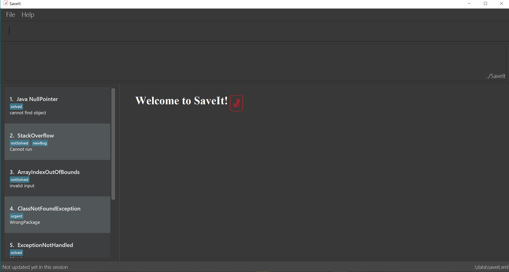

By: T2-04 Since: Sep 2018 Licence: MIT
- 1. Introduction
- 2. Quick Start
- 3. Features
- 3.1. Viewing help :
help - 3.2. Adding a person:
add - 3.3. Listing all persons :
list - 3.4. Editing a person :
edit - 3.5. Locating persons by name:
serach - 3.6. Deleting a person :
delete - 3.7. Selecting a person :
select - 3.8. Listing entered commands :
history - 3.9. Undoing previous command :
undo - 3.10. Redoing the previously undone command :
redo - 3.11. Clearing all entries :
clear - 3.12. Exiting the program :
exit - 3.13. Refactor Tag:
refactorTag - 3.14. Saving the data
- 3.15. Autosuggestion of (existing) Tags
- 3.16. Command highlight
- 3.17. Team based - Creating / Switching projects [coming in v2.0]
- 3.18. Team based - Data access from cloud [coming in v2.0]
- 3.19. Highlight the page : highlight [coming in v2.0]
- 3.20. Encrypting data files
[coming in v2.0]
- 3.1. Viewing help :
- 4. FAQ
- 5. Command Summary
1. Introduction
Developers usually search google to find solutions to issue/problems, however, bookmarking a certain webpage (where the solution is found) does not tell the user much about what was searched (to find that solution in the first place). It is likely that if the developer encounters the same issue/problem again, instead of searching through their bookmarks, they would search google and go through all of the links again.
SaveIt is geared at keeping track of the issues that the user finds and to link it with the solution found on google. More importantly, SaveIt is optimized for those who prefer to work with a Command Line Interface (CLI) while still having the benefits of a Graphical User Interface (GUI). If you can type fast, SaveIt can help you search the same issue that save previously faster than traditional GUI apps.
2. Quick Start
-
Ensure you have Java version
9or later installed in your Computer. -
Download the latest
saveit.jarhere. -
Copy the file to the folder you want to use as the home folder for your Address Book.
-
Double-click the file to start the app. The GUI should appear in a few seconds.
-
Type the command in the command box and press Enter to execute it. e.g. typing help and pressing Enter will open the help window.
-
Some example commands you can try:
-
list: lists all issues recorded -
add: add i/ISSUE_STATEMENT s/SOLUTION_LINK1 s/SOLUTION_LINK2 t/TAG1 t/TAG2 : records an issue with the following links where solutions to the issue were found. The issues can be tagged to help with organization and ease of search. -
search: Search ISSUE : searches the records for a certain issue (case-insensitive) -
edit: edit INDEX i/NEW_ISSUE s/NEW_SOLUTION_LINK1 s/NEW_SOLUTION_LINK2… : edits the details of the 2nd issue in the current list -
delete: delete 3 : deletes the 3rd issue shown in the current list -
exit: . exit : exits the app
-
-
Refer to Section 3, “Features” for details of each command.
 -
Type the command in the command box and press Enter to execute it.
e.g. typinghelpand pressing Enter will open the help window. -
Some example commands you can try:
-
list: lists all contacts -
addn/John Doe p/98765432 e/johnd@example.com a/John street, block 123, #01-01: adds a contact namedJohn Doeto the Address Book. -
delete3: deletes the 3rd contact shown in the current list -
exit: exits the app
-
-
Refer to Section 3, “Features” for details of each command.
3. Features
Command Format
-
Words in
UPPER_CASEare the parameters to be supplied by the user e.g. inadd i/ISSUE,ISSUEis a parameter which can be used asadd i/Segment Fault. -
Items in square brackets are optional e.g
n/NAME [t/TAG]can be used asn/John Doe t/friendor asn/John Doe. -
Items with
… after them can be used multiple times including zero times e.g.[t/TAG]…can be used ast/friend,t/friend t/familyetc. -
Parameters can be in any order e.g. if the command specifies
i/ISSUE_STATEMENT s/SOLUTION_LINK, s/SOUTION_LINK i/ISSUE_STATEMENTis also acceptable.
3.1. Viewing help : help
Format: help
3.2. Adding a person: add
Adds a person to the address book
Format: add i/ISSUE_STATEMENT s/SOLUTION_LINK1 s/SOLUTION_LINK2 r/REMARK t/TAG…
-
An issue can have any number of tags (including 0)
-
An issue can have any number of solutions (including 0)
-
An issue can have any number of remarks (including 0)
Examples:
-
add i/Undefined Variable s/www.example1a.com s/www.example1b.com -
add i/Segment Fault s/www.example2.com t/JAVA
3.3. Listing all persons : list
Shows a list of all issues in the issue bookmark according to either chronological order or frequency order. Users can also choose to list part of issues.
Format: list
|
The default result of list command is listing all issues in a chronological order. |
Format: list p2 chr
|
Listing issues from page 2 (No.11 - No.20) in a chronological order. |
Format: list freq
|
According to frequency order |
3.4. Editing a person : edit
Edits an existing person in the issue list.
Format: edit INDEX i/NEW_ISSUE s/NEW_SOLUTION_LINK1 s/NEW_SOLUTION_LINK2 t/TAG1 r/REMARK1
|
Examples:
-
edit 1 r/use String instead of Byte[] -
Edits the solution of the 1st bug encountered is to use a string instead of a Byte array. -
Edit 2 i/solved s/ -
Edits the description of the second issue to be marked as solved and clears all existing solutions.
3.5. Locating persons by name: serach
Search issue by tags, issue statement or remarks.
Format: search KEYWORD [MORE_KEYWORDS]
|
Examples:
-
find John
ReturnsjohnandJohn Doe -
find Betsy Tim John
Returns any person having namesBetsy,Tim, orJohn
3.6. Deleting a person : delete
Deletes the specified issue from the issue tracker.
Format: delete INDEX
|
Examples:
-
list chr -
delete 2-
Deletes the 2nd issue in the issue tracker.
-
-
search Undefined -
delete 1-
Deletes the 1st issue in the results of the find command.
-
3.7. Selecting a person : select
Selects the issue identified by the index number used in the displayed issue list.
Format: select INDEX
|
Examples:
-
list chr -
select 2 -
Selects the 2nd issue in the issue list. -
find Undefined -
select 1 -
Selects the 1st issue in the results of the find command.
3.8. Listing entered commands : history
Lists all the commands that you have entered in reverse chronological order.
Format: history
|
Pressing the ↑ and ↓ arrows will display the previous and next input respectively in the command box. |
3.9. Undoing previous command : undo
Restores the issue tracker to the state before the previous undoable command was executed.
Format: undo
|
Undoable commands: those commands that modify the address book’s content ( |
Examples:
-
delete 1
list chr
undo(reverses thedelete 1command) -
select 1
list chr
undo
Theundocommand fails as there are no undoable commands executed previously. -
delete 1
clear
undo(reverses theclearcommand)
undo(reverses thedelete 1command)
3.10. Redoing the previously undone command : redo
Reverses the most recent undo command.
Format: redo
Examples:
-
delete 1
undo(reverses thedelete 1command)
redo(reapplies thedelete 1command) -
delete 1
redo
Theredocommand fails as there are noundocommands executed previously. -
delete 1
clear
undo(reverses theclearcommand)
undo(reverses thedelete 1command)
redo(reapplies thedelete 1command)
redo(reapplies theclearcommand)
3.11. Clearing all entries : clear
Clears all entries from the issue tracker.
Format: clear
3.12. Exiting the program : exit
Exits the program.
Format: exit
3.13. Refactor Tag: refactorTag
To rename or remove a certain tag (for all entries with that tag).
Format: refactorTag java javascript
-
Changes all entries tagged [java] to be tagged [javascript]
Format: refactorTag java [null]
-
Removes the tag [java] from all the entries
3.14. Saving the data
Issue bookmark data are saved in the hard disk automatically after any command that changes the data.
There is no need to save manually.
3.15. Autosuggestion of (existing) Tags
To prevent the user from creating many similar tags / duplicates, whenever the user creates a record with a tag, or modifies a record’s tag, the application searches for similar tags in the system and prompts the user with a list of similar tags.
Example:
-
add i/NEW_ISSUE t/java
-
Similar tags have been found that have matched with [java], do you mean?
-
Javascript
-
Java9
-
No, i would like to create a new tag [java]
-
-
tag 1 : chooses to replace [java] with [javascript]
-
tag 3 : chooses to create a new tag [java]
3.16. Command highlight
Since some commands are quite long, some keywords and parameters are identified to help users to distinguish different information that they input.
Example:
add i/ISSUE_STATEMENT s/SOLUTION_LINK1 s/SOLUTION_LINK2 r/REMARK t/TAG…
edit INDEX i/NEW_ISSUE s/NEW_SOLUTION_LINK1 s/NEW_SOLUTION_LINK2 t/TAG1 r/REMARK1
3.17. Team based - Creating / Switching projects [coming in v2.0]
Records are organized into projects, that way, each project only stores information (bugs/issues) relevant to that project.
3.18. Team based - Data access from cloud [coming in v2.0]
Developers usually work in teams, and since they are working on the same code base, it is likely that they will encounter the same issues. Developers can be added into projects (mentioned in 3.16), and have access to the same recorded issues that others have added. The data will be hosted on a cloud server so that any updates are accessible by other developers straight away.
-
Creating projects: new cs2103project
-
Viewing projects: projects
-
1. cs2103project
-
2. cs1010sproject
-
-
Switching projects: switch 1 OR switch cs2103project
3.19. Highlight the page : highlight [coming in v2.0]
Highlight the certain part of the page that show on the window, use a annotation box.
Format: highlight
3.20. Encrypting data files [coming in v2.0]
{explain how the user can enable/disable data encryption}
4. FAQ
Q: How do I transfer my data to another Computer?
A: Install the app in the other computer and overwrite the empty data file it creates with the file that contains the data of your previous Address Book folder.
5. Command Summary
-
Add
add i/ISSUE_STATEMENT s/SOLUTION_LINK1 s/SOLUTION_LINK2 [r/REMARK] [t/TAG]…
e.g.add i/exception thrown not handled s/add catch statement below it s/Link:www.https://stackoverflow.com/questions/… -
Clear :
clear -
Delete :
delete INDEX
e.g.delete 3 -
Edit :
edit INDEX [i/ISSUE_STATEMENT] [s/SOLUTION_LINK1] [s/SOLUTION_LINK2]
e.g.edit 2 i/exception thrown not handled s/issue solved -
Search :
search KEYWORD [MORE_KEYWORDS]
e.g.Search BST -
List :
list -
Help :
help -
Select :
select INDEX
e.g.select 2 -
History :
history -
Undo :
undo -
Redo :
redo -
Highlight :
highlight -
Exit : exit